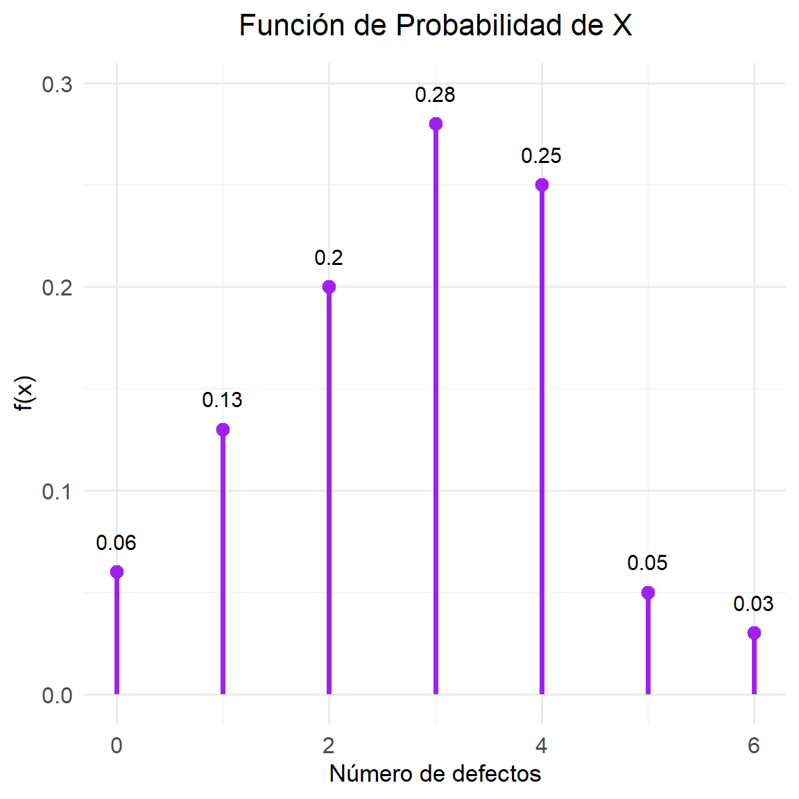
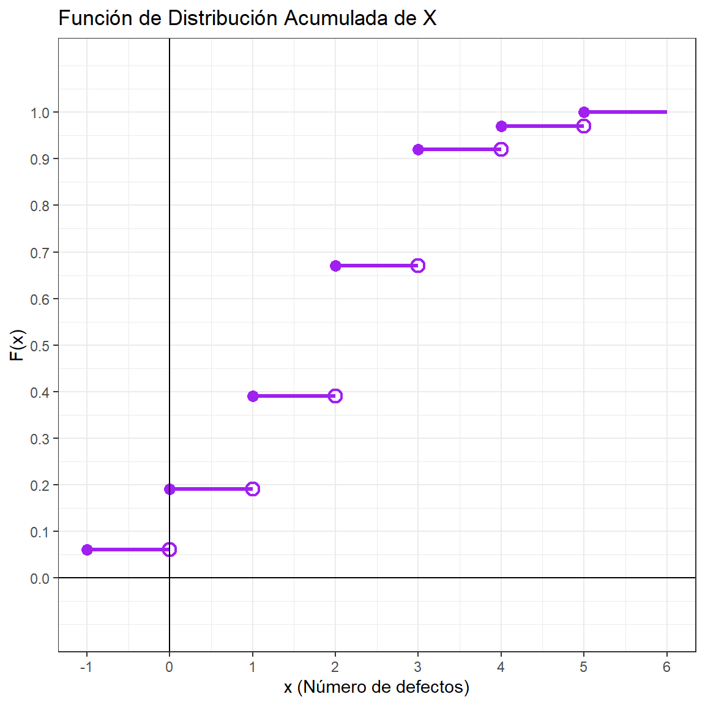
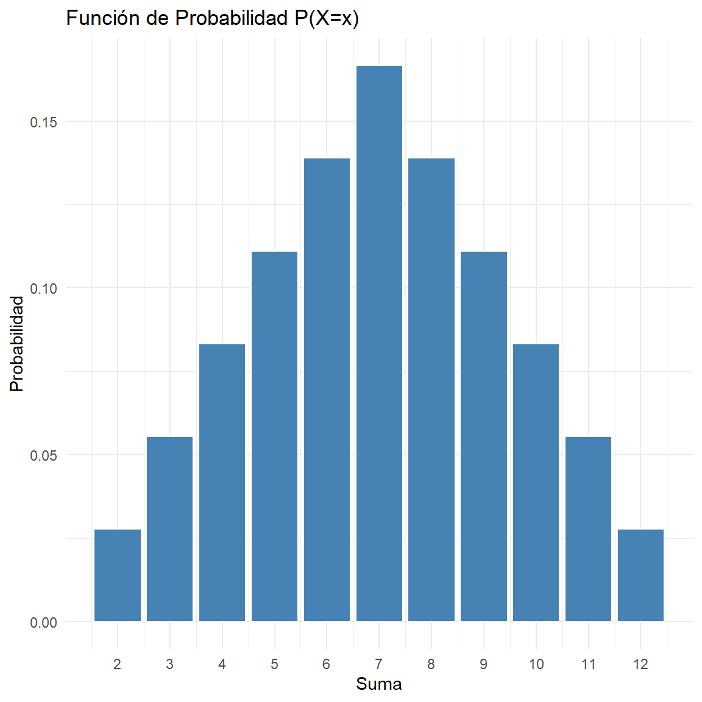
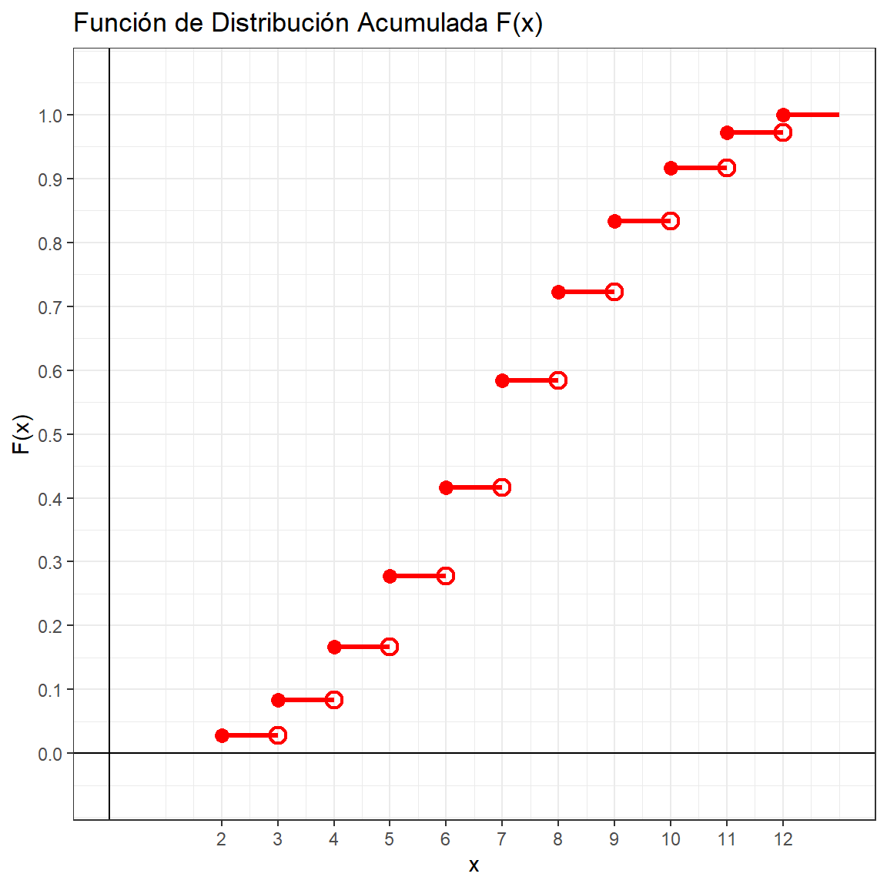
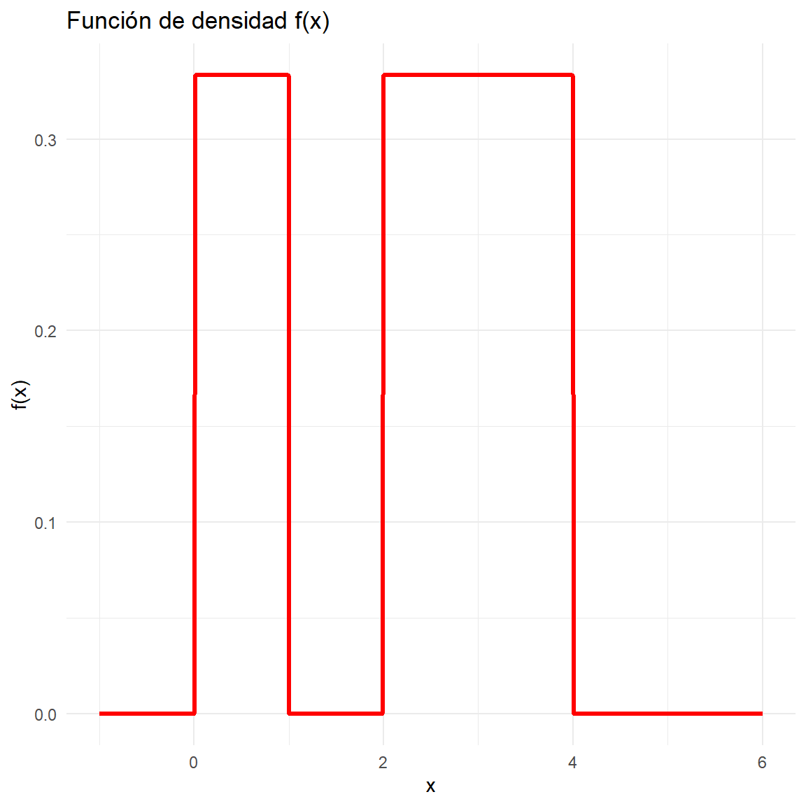
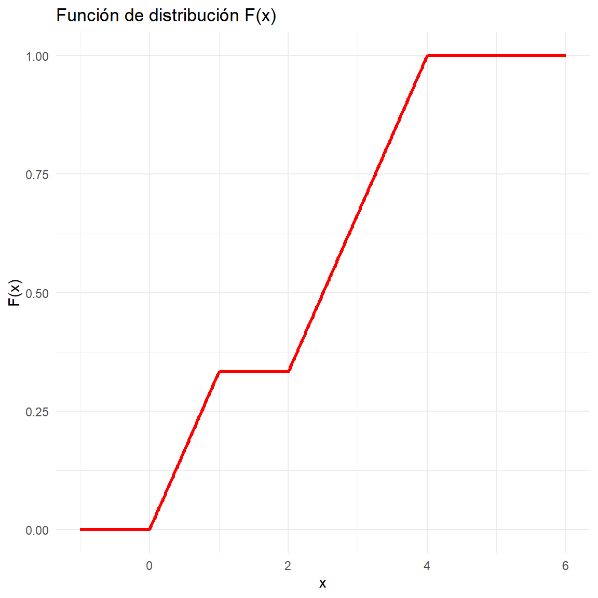
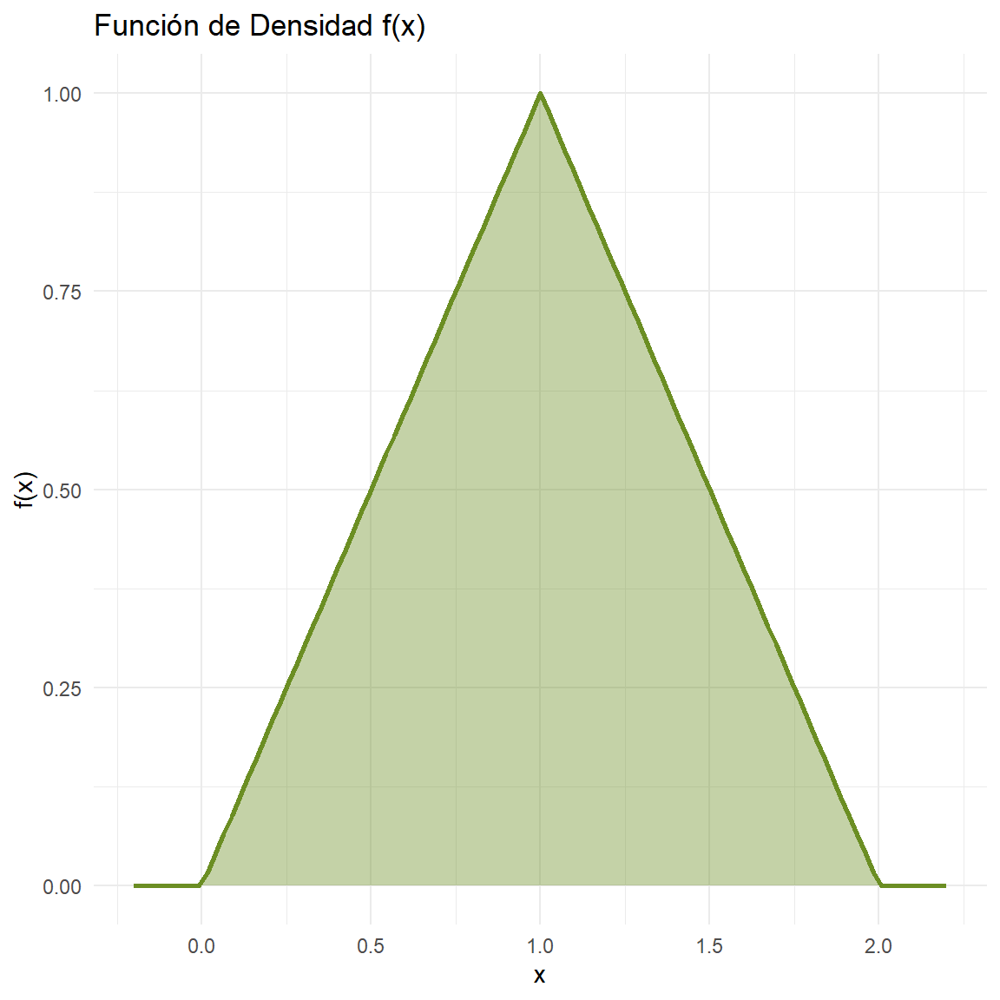
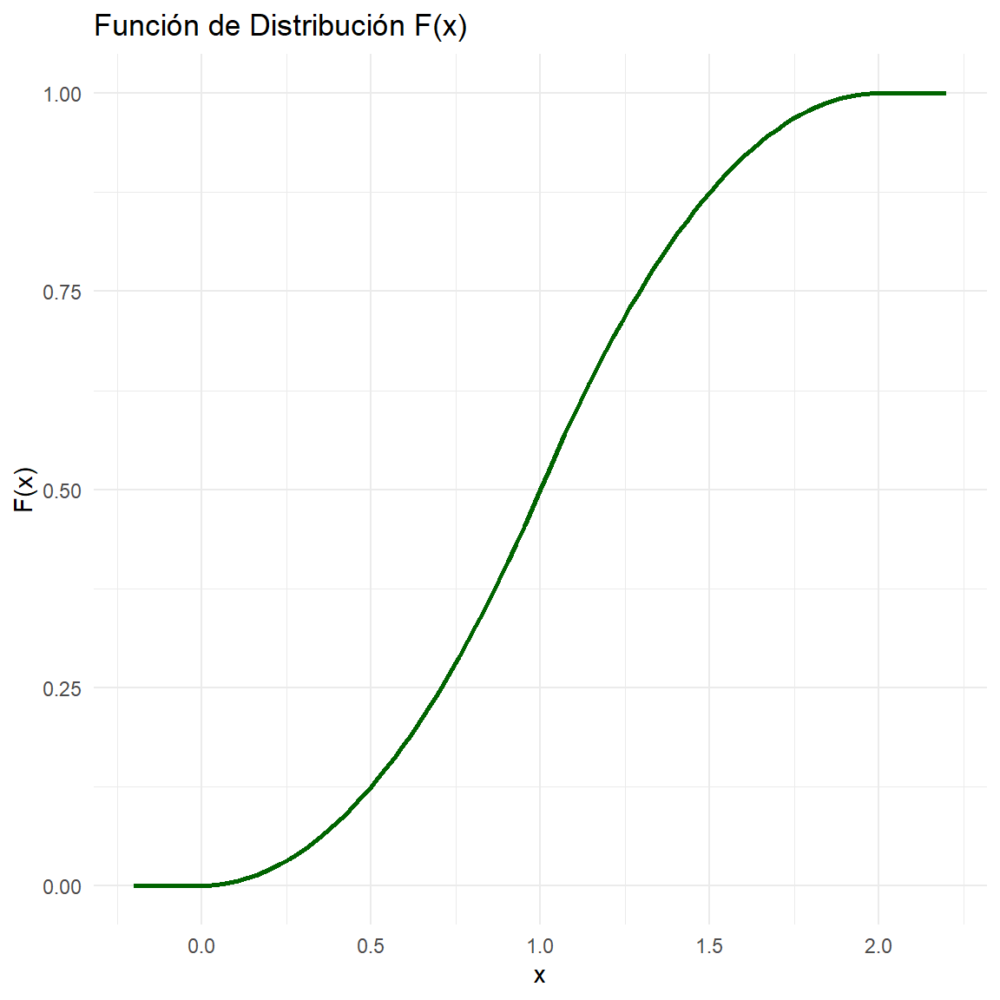
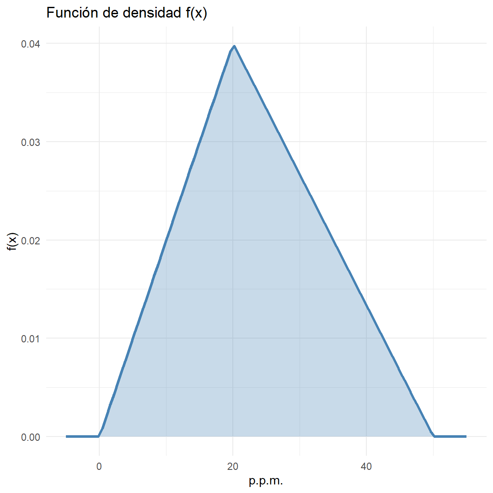

Ver código
options(
knitr.table.format = "html",
scipen = 999
)options(
knitr.table.format = "html",
scipen = 999
)(Wickham et al. 2019; Zhu 2024; Wickham y Bryan 2025; readr?)
(Wickham et al. 2019; Zhu 2024; Wickham y Bryan 2025)
ipak <- function(pkg){
options(repos = c(CRAN = "https://cloud.r-project.org"))
new.pkg <- pkg[!(pkg %in% rownames(installed.packages()))]
if(length(new.pkg)) install.packages(new.pkg, dependencies = TRUE)
invisible(
lapply(pkg, function(p)
suppressPackageStartupMessages(
library(p, character.only = TRUE)
)
)
)
}
packages <- c("tidyverse","kableExtra","ggplot2","readxl")
ipak(packages)1. DEFINICIÓN DE LA VARIABLE ALEATORIA
Una Variable Aleatoria (VA) es una función matemática que asocia un número real a cada elemento del espacio muestral de un experimento aleatorio. Formalmente, dado un espacio de probabilidad definido por el espacio muestral \Omega, una variable aleatoria X es una función medible tal que:
X: \Omega \to \mathbb{R}
Esta función permite transformar eventos abstractos o categóricos en valores numéricos, facilitando el análisis matemático y el cálculo de probabilidades. Se denota convencionalmente con letras mayúsculas (por ejemplo, X, Y) y los valores específicos que asume con letras minúsculas (por ejemplo, x, y).
2. CLASIFICACIÓN DE LAS VARIABLES ALEATORIAS
Las variables aleatorias se clasifican según la naturaleza de su recorrido o conjunto de valores posibles (soporte):
3. DISTRIBUCIÓN DE PROBABILIDAD
La distribución de probabilidad describe cómo se asignan o distribuyen las probabilidades entre los distintos valores que puede tomar la variable aleatoria. Su formulación matemática depende de la clasificación de la variable.
3.1. Función de Masa de Probabilidad (FMP)
Aplica exclusivamente a variables aleatorias discretas. La Función de Masa de Probabilidad, denotada como p(x), define la probabilidad puntual de que la variable aleatoria X tome exactamente un valor específico x:
p(x) = P(X = x)
Propiedades de la FMP:
No negatividad: p(x) \geq 0 para todo x.
La suma de las probabilidades sobre todo el soporte es la unidad:
\sum_{x} p(x) = 1
3.2. Función de Densidad de Probabilidad (FDP)
Aplica a variables aleatorias continuas. Dado que la probabilidad de que una variable continua tome un valor exacto es cero (P(X = x) = 0), se utiliza la Función de Densidad de Probabilidad, f(x), para calcular probabilidades en intervalos. La probabilidad se define como el área bajo la curva de la función en un intervalo dado [a, b]:
P(a \leq X \leq b) = \int_{a}^{b} f(x) dx
Propiedades de la FDP:
No negatividad: f(x) \geq 0 para todo x.
La integral sobre todo el espacio muestral es la unidad:
\int_{-\infty}^{\infty} f(x) dx = 1
4. FUNCIÓN DE DISTRIBUCIÓN ACUMULADA (FDA)
La Función de Distribución Acumulada, representada por F(x), es aplicable tanto a variables discretas como continuas. Expresa la probabilidad teórica de que la variable aleatoria X asuma un valor menor o igual a un valor dado x.
F(x) = P(X \leq x)
El cálculo de la FDA se realiza de la siguiente manera:
Para variables discretas:
F(x) = \sum_{x_i \leq x} p(x_i)
Para variables continuas:
F(x) = \int_{-\infty}^{x} f(t) dt
Propiedades Fundamentales de la FDA:
\lim_{x \to -\infty} F(x) = 0
\lim_{x \to \infty} F(x) = 1.
Si a < b, entonces F(a) \leq F(b).
\lim_{h \to 0^+} F(x + h) = F(x).
P(a < X \leq b) = F(b) - F(a).
5. PROPIEDADES Y MOMENTOS DE LA VARIABLE ALEATORIA
Para caracterizar y resumir el comportamiento de una distribución de probabilidad, se utilizan los momentos estadísticos y las medidas de dispersión.
5.1. Esperanza Matemática o Valor Esperado ( \mu )
Representa el centro de gravedad de la distribución poblacional. Es el valor promedio ponderado a largo plazo de la variable aleatoria. Se denota como E[X] o \mu.
Caso Discreto: E[X] = \sum_{x} x \cdot p(x)
Caso Continuo: E[X] = \int_{-\infty}^{\infty} x \cdot f(x) dx
5.2. Varianza (\sigma^2)
Es una medida de dispersión que cuantifica el grado de variabilidad de la variable aleatoria con respecto a su esperanza matemática. Es el segundo momento central y se denota como Var(X) o \sigma^2.
Var(X) = E[(X - \mu)^2]
Una fórmula operativa equivalente y más eficiente para su cálculo es:
Var(X) = E[X^2] - (E[X])^2
5.3. Desviación Estándar (\sigma)
Dado que la varianza está expresada en unidades cuadradas, la Desviación Estándar se define como la raíz cuadrada positiva de la varianza. Permite medir la dispersión de los datos en las mismas unidades originales de la variable aleatoria.
\sigma = \sqrt{Var(X)}
5.4. Coeficiente de Variación (CV)
Es una medida de dispersión relativa que relaciona la desviación estándar con la magnitud de la esperanza matemática. Se utiliza para comparar la variabilidad entre distribuciones con distintas unidades o diferentes escalas de medición, expresándose habitualmente como un porcentaje.
CV = \frac{\sigma}{|\mu|}
Se utiliza el valor absoluto de \mu para garantizar que el coeficiente mantenga un sentido de magnitud positiva de dispersión, independientemente del signo del valor esperado.
Una organización de consumidores anota regularmente el número de defectos importantes que se encuentran en un automóvil nuevo. De sus estudios ha encontrado que la función de distribución acumulada de la variable aleatoria (X) es:
F(x)= \begin{cases} 0 & \text{si } x < 0 \\ 0.06 & \text{si } 0 \le x < 1 \\ 0.19 & \text{si } 1 \le x < 2 \\ 0.39 & \text{si } 2 \le x < 3 \\ 0.67 & \text{si } 3 \le x < 4 \\ 0.92 & \text{si } 4 \le x < 5 \\ 0.97 & \text{si } 5 \le x < 6 \\ 1 & \text{si } x \ge 6 \end{cases}
Se pide:
a. (P(X=2))
b. (P(X ))
c. (P(2 X ))
d. (P(2 < X < 5))
e. Esperanza, varianza y desviación estándar
SOLUCIÓN
Para obtener la función de probabilidad usamos:
P(X=x)=F(x)-F(x^-)
library(kableExtra)
# valores de la variable
x <- 0:6
# probabilidades Obtenidas de los saltos de la CDF
fx <- c(0.06, 0.13, 0.20, 0.28, 0.25, 0.05, 0.03)
# datos dados de la FDA
Fx <- c(0.06, 0.19, 0.39, 0.67, 0.92, 0.97, 1.00)
tabla <- data.frame(
x = x,
`f(x)` = fx,
`F(x)` = Fx
)
# Tabla estética con colores
tabla %>%
kbl(align = "c", col.names = c("x", "f(x)", "F(x)")) %>%
kable_styling(
full_width = FALSE,
position = "center",
bootstrap_options = c("striped", "hover", "condensed")
) %>%
row_spec(0, bold = TRUE, color = "white", background = "#4A90E2") %>% # encabezado azul profesional
row_spec(1:nrow(tabla), background = "#E8F2FF", color = "#1A3F66" ) %>% # filas azul pastel
column_spec(1, bold = TRUE, color = "#1A3F66") %>% # columna x
add_header_above(c("Distribución de Probabilidad" = 3),
bold = TRUE,
background = "#6EB5FF",
color = "white")| x | f(x) | F(x) |
|---|---|---|
| 0 | 0.06 | 0.06 |
| 1 | 0.13 | 0.19 |
| 2 | 0.20 | 0.39 |
| 3 | 0.28 | 0.67 |
| 4 | 0.25 | 0.92 |
| 5 | 0.05 | 0.97 |
| 6 | 0.03 | 1.00 |
Graficas
ggplot(tabla, aes(x = x, y = fx)) +
geom_segment(aes(x = x, xend = x, y = 0, yend = fx),
linewidth = 1.3, color = "blue") +
geom_point(size = 3, color = "blue") +
# Posición corregida de etiquetas
geom_text(aes(label = fx, y = fx + 0.015),
color = "black", size = 4) +
labs(
title = "Función de Probabilidad de X",
x = "Número de defectos",
y = "f(x)"
) +
# Corregimos márgenes del título para que NO se pegue
theme_minimal(base_size = 14) +
theme(
plot.title = element_text(size = 16, hjust = 0.5, margin = margin(b = 12)),
axis.title = element_text(size = 13),
axis.text = element_text(size = 12)
)
# Definición de los intervalos y valores acumulados
df_cdf <- data.frame(
x_inicio = c(-1, 0, 1, 2, 3, 4, 5),
x_fin = c( 0, 1, 2, 3, 4, 5, 6),
y = c(0.06, 0.19, 0.39, 0.67, 0.92, 0.97, 1.00)
)
ggplot() +
# Configuración estética
theme_bw() +
scale_x_continuous(breaks = -2:7,
name = "x (Número de defectos)") +
scale_y_continuous(breaks = seq(0, 1, 0.1),
limits = c(-0.1, 1.1),
name = "F(x)") +
labs(title = "Función de Distribución Acumulada de X") +
# Dibujar los escalones (SEGMENTOS HORIZONTALES)
geom_segment(data = df_cdf,
aes(x = x_inicio, y = y, xend = x_fin, yend = y),
color = "red", linewidth = 1.2) +
# Punto RELLENO a la izquierda (incluido)
geom_point(data = df_cdf, aes(x = x_inicio, y = y),
shape = 16, size = 3, color = "red") +
# Punto VACÍO a la derecha (excluido)
geom_point(data = df_cdf[-nrow(df_cdf), ], # todos excepto el último
aes(x = x_fin, y = y),
shape = 1, size = 3, stroke = 1.2, color = "red") +
# Ejes principales
geom_hline(yintercept = 0, color = "black", linewidth = 0.5) +
geom_vline(xintercept = 0, color = "black", linewidth = 0.5)
a. P(X=2)=f(2)=0.20
Código R
fx <- c(0.06, 0.13, 0.20, 0.28, 0.25, 0.05, 0.03)
x <- 0:6
P_X_2 <- fx[x == 2]
P_X_2[1] 0.2b.
P(X≥3) = f(3)+f(4)+f(5)+f(6)
=0.28+0.25+0.05+0.03
=0.61
Código R
fx <- c(0.06, 0.13, 0.20, 0.28, 0.25, 0.05, 0.03)
x <- 0:6
P_X_ge_3 <- sum(fx[x >= 3])
P_X_ge_3[1] 0.61c. P(2≤X≤5) =f(2)+f(3)+f(4)+f(5) =0.20+0.28+0.25+0.05 =0.78
Código R
fx <- c(0.06, 0.13, 0.20, 0.28, 0.25, 0.05, 0.03)
x <- 0:6
P_2_le_X_le_5 <- sum(fx[x >= 2 & x <= 5])
P_2_le_X_le_5[1] 0.78d. P(2<X<5) =f(3)+f(4) =0.28+0.25 =0.53
Código R
fx <- c(0.06, 0.13, 0.20, 0.28, 0.25, 0.05, 0.03)
x <- 0:6
P_2_lt_X_lt_5 <- sum(fx[x > 2 & x < 5])
P_2_lt_X_lt_5[1] 0.53e.
1 Esperanza: E[X]=∑xf(x)
E[X]=0(0.06)+1(0.13)+2(0.20)+3(0.28)+4(0.25)+5(0.05)+6(0.03) 𝐸[𝑋]=2.80
2 Varianza: Var(X)=∑(x−μ)2f(x)
Var(X)=1.94
3 Desviación Estándar:
σ=Var(X)=1.3928
4 Coeficiente de Variación:
CV=μ/σ=1.3928/2.80=0.4974
Código R
E <- sum(x * fx)
E[1] 2.8Var <- sum((x - E)^2 * fx)
Var[1] 1.94SD <- sqrt(Var)
SD[1] 1.392839CV <- SD / E
CV[1] 0.4974424Sea X la variable aleatoria que representa la suma de resultados al lanzar dos dados.
a. ¿Cuál es el soporte de la variable aleatoria X?
b. Obtener la función de probabilidad de la variable y su diagrama de barras.
c. Hallar la función de distribución de X y representarla gráficamente.
d. Calcular la probabilidad de que la suma de los resultados obtenidos al lanzar dos dados sea mayor que 4 y menor que 8.
e. Calcular la probabilidad de que la suma de los resultados obtenidos al lanzar dos dados sea mayor o igual que 4 y menor o igual que 8.
f. ¿Cuál es el valor esperado de la suma de los resultados al lanzar dos dados? ¿Y su desviación típica?
SOLUCIÓN
a. Soporte de la variable aleatoria X
El soporte S_X es el conjunto de valores posibles que puede tomar la suma de dos dados (desde 1+1 hasta 6+6): S_X = \{2, 3, 4, 5, 6, 7, 8, 9, 10, 11, 12\}
b. Función de probabilidad y diagrama de barras
Primero se generá el espacio muestral completo (n=36) para calcular las probabilidades exactas f(x) = P(X=x).
# Generamos todas las combinaciones de dos dados
espacio_muestral <- expand.grid(dado1 = 1:6, dado2 = 1:6)
espacio_muestral$suma <- espacio_muestral$dado1 + espacio_muestral$dado2
# Calculamos la función de masa de probabilidad (pmf)
tabla_prob <- as.data.frame(table(espacio_muestral$suma) / 36)
names(tabla_prob) <- c("x", "prob")
tabla_prob$x <- as.numeric(as.character(tabla_prob$x))
# Tabla con colores bonitos
library(kableExtra)
knitr::kable(tabla_prob,
col.names = c("Suma (x)", "P(X = x)"),
digits = 4,
align = "c",
format = "html") |>
kable_styling(
bootstrap_options = c("striped", "hover", "condensed", "bordered"),
full_width = FALSE,
position = "center",
font_size = 15
) |>
row_spec(0, bold = TRUE, color = "white",
background = "#4A90E2") |> # azul elegante
row_spec(1:nrow(tabla_prob),
background = "#E8F2FF", # azul pastel
color = "#1A3F66") |> # azul oscuro para el texto
column_spec(1, bold = TRUE, color = "#1A3F66") |>
add_header_above(c("Función de Probabilidad de X" = 2),
bold = TRUE,
background = "#6EB5FF",
color = "white")| Suma (x) | P(X = x) |
|---|---|
| 2 | 0.0278 |
| 3 | 0.0556 |
| 4 | 0.0833 |
| 5 | 0.1111 |
| 6 | 0.1389 |
| 7 | 0.1667 |
| 8 | 0.1389 |
| 9 | 0.1111 |
| 10 | 0.0833 |
| 11 | 0.0556 |
| 12 | 0.0278 |
# Gráfico
library(ggplot2)
ggplot(tabla_prob, aes(x = x, y = prob)) +
geom_bar(stat = "identity", fill = "steelblue", color = "white") +
scale_x_continuous(breaks = 2:12) +
labs(title = "Función de Probabilidad P(X=x)", x = "Suma", y = "Probabilidad") +
theme_minimal()
c La función de distribución acumulada está dada por:
F(x) = P(X \le x)
Se construye mediante los valores acumulados de f(x).
# Generamos todas las combinaciones de dos dados
espacio_muestral <- expand.grid(dado1 = 1:6, dado2 = 1:6)
espacio_muestral$suma <- espacio_muestral$dado1 + espacio_muestral$dado2
# Calculamos la función de masa de probabilidad (pmf)
tabla_prob <- as.data.frame(table(espacio_muestral$suma) / 36)
names(tabla_prob) <- c("x", "f(x)")
tabla_prob$x <- as.numeric(as.character(tabla_prob$x))
# Agregamos la función acumulada
tabla_prob$F_x <- cumsum(tabla_prob$`f(x)`)
# Tabla con colores bonitos
library(kableExtra)
tabla_prob |>
knitr::kable(
col.names = c("Suma (x)", "f(x)", "F(x)"),
digits = 4,
align = "c",
format = "html"
) |>
kable_styling(
bootstrap_options = c("striped", "hover", "condensed", "bordered"),
full_width = FALSE,
position = "center",
font_size = 15
) |>
row_spec(0, bold = TRUE, color = "white",
background = "#4A90E2") |>
row_spec(1:nrow(tabla_prob),
background = "#E8F2FF",
color = "#1A3F66") |>
column_spec(1, bold = TRUE, color = "#1A3F66") |>
add_header_above(
c("Distribución de X: f(x) y F(x)" = 3),
bold = TRUE,
background = "#6EB5FF",
color = "white"
)| Suma (x) | f(x) | F(x) |
|---|---|---|
| 2 | 0.0278 | 0.0278 |
| 3 | 0.0556 | 0.0833 |
| 4 | 0.0833 | 0.1667 |
| 5 | 0.1111 | 0.2778 |
| 6 | 0.1389 | 0.4167 |
| 7 | 0.1667 | 0.5833 |
| 8 | 0.1389 | 0.7222 |
| 9 | 0.1111 | 0.8333 |
| 10 | 0.0833 | 0.9167 |
| 11 | 0.0556 | 0.9722 |
| 12 | 0.0278 | 1.0000 |
# Crear la tabla de f(x) = P(X = x)
# Generamos el espacio muestral de dos dados
espacio_muestral <- expand.grid(dado1 = 1:6, dado2 = 1:6)
espacio_muestral$suma <- espacio_muestral$dado1 + espacio_muestral$dado2
# Función de probabilidad f(x)
tabla_fx <- as.data.frame(table(espacio_muestral$suma) / 36)
names(tabla_fx) <- c("x", "fx")
tabla_fx$x <- as.numeric(as.character(tabla_fx$x))
# Agregar columna acumulada: F(x)
tabla_fx$F <- cumsum(tabla_fx$fx)
# Crear tabla para gráfica escalonada
df_cdf <- data.frame(
x_inicio = tabla_fx$x,
x_fin = c(tail(tabla_fx$x, -1), max(tabla_fx$x) + 1),
y = tabla_fx$F
)
# Graficar F(x)
library(ggplot2)
ggplot() +
theme_bw() +
scale_x_continuous(breaks = tabla_fx$x, name = "x") +
scale_y_continuous(breaks = seq(0,1,0.1),
limits = c(-0.05,1.05),
name = "F(x)") +
labs(title = "Función de Distribución Acumulada F(x)") +
# Segmentos horizontales
geom_segment(data = df_cdf,
aes(x = x_inicio, y = y, xend = x_fin, yend = y),
color = "red", linewidth = 1.2) +
# Punto cerrado a la izquierda
geom_point(data = df_cdf,
aes(x = x_inicio, y = y),
shape = 16, size = 3, color = "red") +
# Punto abierto a la derecha
geom_point(data = df_cdf[-nrow(df_cdf),],
aes(x = x_fin, y = y),
shape = 1, size = 3, stroke = 1.2, color = "red") +
# Ejes
geom_hline(yintercept = 0, color = "black") +
geom_vline(xintercept = 0, color = "black")
d.
P(4 < X < 8) = f(5) + f(6) + f(7)
prob_d <- sum(tabla_fx$fx[tabla_fx$x > 4 & tabla_fx$x < 8])
prob_d[1] 0.4166667e.
P(4 \le X \le 8) = P(X=4) + P(X=5) + P(X=6) + P(X=7) + P(X=8)= \frac{3}{36} + \frac{4}{36} + \frac{5}{36}+\frac{6}{36} + \frac{5}{36}= \frac{23}{36} \approx 0.6389
prob_e <- sum(tabla_fx$fx[tabla_fx$x >= 4 & tabla_fx$x <= 8])
prob_e[1] 0.6388889f.
Para calcular la esperanza, multiplicamos cada valor x por su probabilidad P(x):
E[X] = \sum_{i=1}^{n} x_i \cdot P(X = x_i)
Sustituyendo los valores del problema:
E[X] = \left(2 \cdot \frac{1}{36}\right) + \left(3 \cdot \frac{2}{36}\right) + \dots + \left(12 \cdot \frac{1}{36}\right) = 7
Primero calculamos el segundo momento E[X^2] para usar la fórmula abreviada:
E[X^2] = \sum_{i=1}^{n} x_i^2 \cdot P(X = x_i)
Luego, aplicamos la fórmula de la varianza: Var(X) = E[X^2] - (E[X])^2
Sustituyendo los valores: Var(X) = \frac{1974}{36} - 7^2 = 54.833 - 49 = 5.833
La desviación típica es la raíz cuadrada de la varianza:
\sigma = \sqrt{Var(X)}
\sigma = \sqrt{5.833} \approx 2.415
4 Coeficiente de Variación
La fórmula general para el coeficiente de variación es:
CV = \frac{\sigma}{E[X]} \cdot 100\%
Sustituyendo los valores que obtuvimos en el punto (f) E[X] = 7 y \sigma \approx 2.415:
CV = \frac{2.415}{7} \cdot 100\%
CV \approx 0.345 \cdot 100\% = 34.5\%
Código R
# Cálculo de la Esperanza (E[X])
esperanza <- sum(tabla_fx$x * tabla_fx$fx)
# Mostrar resultado
print(paste("Esperanza:", esperanza))[1] "Esperanza: 7"# Cálculo de la Varianza (Var(X) = E[X^2] - (E[X])^2)
varianza <- sum((tabla_fx$x^2) * tabla_fx$fx) - (esperanza^2)
# Mostrar resultado
print(paste("Varianza:", varianza))[1] "Varianza: 5.83333333333333"# Cálculo de la Desviación Típica (Raíz cuadrada de la varianza)
desviacion <- sqrt(varianza)
# Mostrar resultado
print(paste("Desviación Típica:", desviacion))[1] "Desviación Típica: 2.41522945769824"# Cálculo del Coeficiente de Variación
cv <- (desviacion / esperanza) * 100
cv[1] 34.50328La variable aleatoria X tiene función de densidad dada por: f(x) = \begin{cases} \frac{1}{3} & \text{si } x \in (0,1) \\ \frac{1}{3} & \text{si } x \in (2,4) \\ 0 & \text{en el resto} \end{cases}
a. Demostrar que f(x) es una función de densidad y representarla gráficamente.
b. Obtener la función de distribución de la variable aleatoria X y representarla gráficamente.
c. Calcular P[X < 0.6].
d Calcular P[0.3 \leq X \leq 0.6].
e. Calcular P[0.6 < X < 3.4].
f. Obtener el rango intercuartílico de la variable aleatoria X.
SOLUCIÓN
a Para que sea una función de densidad, debe cumplir que f(x) \geq 0 (lo cual se cumple, ya que 1/3 > 0) y que la integral sobre todo el soporte sea igual a 1:
\begin{aligned} \int_{0}^{1} \frac{1}{3}\,dx + \int_{2}^{4} \frac{1}{3}\,dx &= \left[ \frac{x}{3} \right]_{0}^{1} + \left[ \frac{x}{3} \right]_{2}^{4} \\[4pt] &= \frac{1}{3} + \left( \frac{4}{3} - \frac{2}{3} \right) \\[4pt] &= \frac{1}{3} + \frac{2}{3} \\[4pt] &= 1. \end{aligned}
Código R
library(ggplot2)
x <- seq(-1, 6, length.out = 500)
fx <- ifelse(x > 0 & x < 1, 1/3,
ifelse(x > 2 & x < 4, 1/3, 0))
df <- data.frame(x, fx)
ggplot(df, aes(x, fx)) +
geom_line(color="red", size=1.2) +
theme_minimal() +
labs(title="Función de densidad f(x)",
y="f(x)")
b. Obtener la función de distribución F(x) y graficarla
F(x)= \begin{cases} 0, & x \le 0, \\[6pt] \dfrac{x}{3}, & 0 < x < 1, \\[6pt] \dfrac{1}{3}, & 1 \le x < 2, \\[6pt] \dfrac{1}{3}(x-1), & 2 < x < 4, \\[6pt] 1, & x \ge 4. \end{cases}
Código R
Fx <- ifelse(x <= 0, 0,
ifelse(x < 1, x/3,
ifelse(x < 2, 1/3,
ifelse(x < 4, (x-1)/3, 1))))
df2 <- data.frame(x, Fx)
ggplot(df2, aes(x, Fx)) +
geom_line(color="red", size=1.2) +
theme_minimal() +
labs(title="Función de distribución F(x)",
y="F(x)")
c. Calcular P(X < 0.6)
P(X<0.6) = \int_{0}^{0.6} \frac{1}{3},dx= \frac{1}{3}(0.6) = 0.2
Código R
p_c <- (0.6 - 0) * (1/3)
p_c[1] 0.2d. Calcular P(0.3 \le X \le 0.6)
P(0.3 \le X \le 0.6) = \int_{0.3}^{0.6} \frac{1}{3},dx = \frac{1}{3}(0.6 - 0.3)=0.1
Código R
p_d <- (0.6 - 0.3)*(1/3)
p_d[1] 0.1e. Calcular P(0.6 < X < 3.4)
El intervalo cruza dos tramos:
P(0.6<X<3.4)
\int_{0.6}^{1} \frac{1}{3},dx +\int_{2}^{3.4} \frac{1}{3},dx = \frac{1}{3}(1-0.6) + \frac{1}{3}(3.4-2) = \frac{0.4}{3} + \frac{1.4}{3} = \frac{1.8}{3}=0.6
Código R
p_e <- (1 - 0.6)*(1/3) + (3.4 - 2)*(1/3)
p_e[1] 0.6f. Rango intercuartílico
Q_1 = 0.75,\qquad Q_3 = 3.25, \qquad RI = Q_3 - Q_1 = 3.25 - 0.75 = 2.5
Código R
Q1 <- 0.75
Q3 <- 3.25
RI <- Q3 - Q1
RI[1] 2.5\begin{aligned} E[X] &= \int_{0}^{1} x\frac{1}{3}\,dx + \int_{2}^{4} x\frac{1}{3}\,dx \\[6pt] &= \frac{1}{3}\left[\frac{x^{2}}{2}\right]_{0}^{1} + \frac{1}{3}\left[\frac{x^{2}}{2}\right]_{2}^{4} \\[6pt] &= \frac{1}{3}\left(\frac{1}{2}\right) + \frac{1}{3}\left(\frac{16-4}{2}\right) \\[6pt] &= \frac{1}{6} + 2 = 2.1667. \end{aligned}
\begin{aligned} E[X^{2}] &= \int_{0}^{1} x^{2}\frac{1}{3}\,dx + \int_{2}^{4} x^{2}\frac{1}{3}\,dx \\[6pt] &= \frac{1}{3}\left[\frac{x^{3}}{3}\right]_{0}^{1} + \frac{1}{3}\left[\frac{x^{3}}{3}\right]_{2}^{4} \\[6pt] &= \frac{1}{9} + \frac{1}{3}\left(\frac{64-8}{3}\right) \\[6pt] &= \frac{1}{9} + \frac{56}{9} = \frac{57}{9} = 6.3333. \end{aligned}
\begin{aligned} \operatorname{Var}(X) &= E[X^{2}] - (E[X])^{2} \\[6pt] &= 6.3333 - (2.1667)^{2} \\[6pt] &= 6.3333 - 4.6944 \\[6pt] &= 1.6389. \end{aligned}
\sigma = \sqrt{1.6389} = 1.28
CV = \frac{\sigma}{E[X]} = \frac{1.28}{2.1667}=0.59
Código en R
# 1. Esperanza E[X]
EX <- (1/3) * integrate(function(x) x, 0, 1)$value +
(1/3) * integrate(function(x) x, 2, 4)$value
EX[1] 2.166667# 2. E[X^2]
EX2 <- (1/3) * integrate(function(x) x^2, 0, 1)$value +
(1/3) * integrate(function(x) x^2, 2, 4)$value
EX2[1] 6.333333# 3. Varianza
VarX <- EX2 - EX^2
VarX[1] 1.638889# 4. Desviación estándar
SDX <- sqrt(VarX)
SDX[1] 1.280191# 5. Coeficiente de variación
CV <- SDX / EX
CV[1] 0.5908574La variable aleatoria X tiene función de densidad dada por: f(x) = \begin{cases} x & \text{si } 0 < x < 1 \\ 2 - x & \text{si } 1 \leq x < 2 \\ 0 & \text{en cualquier otra parte} \end{cases}
a. Demostrar que f(x) es una función de densidad y representarla gráficamente.
b. Obtener la función de distribución de la variable aleatoria X y representarla gráficamente.
c. Calcular el valor esperado y la varianza de X.
d. Hallar los percentiles 30 y 70 de la distribución.
SOLUCIÓN
a Demostrar que f(x) es una función de densidad y graficarla
f(x)= \begin{cases} x & (0 < x < 1), \\[6pt] 2-x & (1 \le x < 2), \\[6pt] 0 & \text{otro caso}. \end{cases}
Debe cumplirse:
x\ge 0,\qquad 2-x\ge 0\quad \text{en sus intervalos}
\begin{aligned} \int_0^1 x\,dx + \int_1^2 (2-x)\,dx &= \left[\frac{x^2}{2}\right]_{0}^{1} + \left[ 2x - \frac{x^2}{2} \right]_{1}^{2} \\[6pt] &= \frac{1}{2} + (4 - 2) - (2 - 0.5) \\[6pt] &= 1. \end{aligned}
Gráfico de densidad
# Gráfico de densidad
f9 <- function(x) {
ifelse(x > 0 & x < 1, x,
ifelse(x >= 1 & x < 2, 2 - x, 0))
}
library(ggplot2)
ggplot(data.frame(x = c(-0.2, 2.2)), aes(x = x)) +
stat_function(fun = f9, geom = "area", fill = "olivedrab", alpha = 0.4) +
stat_function(fun = f9, color = "olivedrab", size = 1) +
labs(title = "Función de Densidad f(x)", x = "x", y = "f(x)") +
theme_minimal()
b. Obtener la función de distribución F(x)
F(x)= \begin{cases} 0, & \quad x \le 0, \\[6pt] \dfrac{x^{2}}{2}, & \quad 0 < x < 1, \\[6pt] 1 - \dfrac{(2-x)^{2}}{2}, & \quad 1 \le x < 2, \\[6pt] 1, & \quad x \ge 2. \end{cases}
Gráfico de F(x)
# Función de distribución acumulada
F9 <- Vectorize(function(x) {
if (x < 0) return(0)
if (x >= 2) return(1)
integrate(f9, 0, x)$value
})
ggplot(data.frame(x = c(-0.2, 2.2)), aes(x = x)) +
stat_function(fun = F9, color = "darkgreen", size = 1) +
labs(title = "Función de Distribución F(x)", x = "x", y = "F(x)") +
theme_minimal()
c. Calcular la esperanza y la varianza
1 Esperanza
\begin{aligned} E[X] &= \int_0^1 x\cdot x\,dx + \int_1^2 x(2-x)\,dx \\[6pt] &= \int_0^1 x^2\,dx + \int_1^2 (2x - x^2)\,dx \\[6pt] &= \left[\frac{x^3}{3}\right]_0^1 + \left[x^2 - \frac{x^3}{3}\right]_1^2 \\[6pt] &= \frac{1}{3} + \big(4 - \tfrac{8}{3}\big) - \big(1 - \tfrac{1}{3}\big) \\[6pt] &= \frac{1}{3} + \frac{4}{3} - \frac{2}{3} = 1 \end{aligned}
2 Segundo momento
E[X^2] = \int_0^1 x^3,dx + \int_1^2 x^2(2-x),dx = \frac14 + \frac{11}{12} = \frac{7}{6}
3 Varianza
Sabemos que:
\operatorname{Var}(X)=E[X^2]-(E[X])^2
Como ya se encontró:
E[X]=1, \qquad E[X^2]=\frac{7}{6}
Entonces:
\operatorname{Var}(X)=\frac{7}{6}-1^2=\frac{7}{6}-1 =\frac{7}{6}-\frac{6}{6} =\frac{1}{6}
4 Desviación estándar
\sigma_X = \sqrt{\operatorname{Var}(X)} = \sqrt{\frac{1}{6}} = \frac{1}{\sqrt{6}}
5 Coeficiente de variación
CV = \frac{\sigma_X}{E[X]} = \frac{\frac{1}{\sqrt{6}}}{1} = \frac{1}{\sqrt{6}}
Código R
# Esperanza E[X]
f_esp <- function(x) x * f9(x)
EX <- integrate(
f_esp,
lower = 0,
upper = 2
)$value
EX[1] 1# E[X^2]
f_esp2 <- function(x) (x^2) * f9(x)
EX2 <- integrate(
f_esp2,
lower = 0,
upper = 2
)$value
EX2[1] 1.166667# Varianza
VarX <- EX2 - (EX)^2
VarX[1] 0.1666667# Desviación estándar
SDX <- sqrt(VarX)
SDX[1] 0.4082483# Coeficiente de variación
CV <- SDX / EX
CV[1] 0.4082483d. Hallar los percentiles 30 y 70
Se resuelve:
F(p_{30})=0.30
F(p_{70})=0.70
Los resultados son:
p_{30}\approx 0.77,\qquad p_{70}\approx 1.23
Código R
# Percentiles 30 y 70
perc30 <- uniroot(function(x) F9(x) - 0.30, interval = c(0, 2))$root
perc70 <- uniroot(function(x) F9(x) - 0.70, interval = c(0, 2))$root
perc30; perc70[1] 0.7746159[1] 1.225385En una población, la cantidad de plomo que tiene una persona en la sangre, medida en p.p.m., es una variable aleatoria con función de densidad: f(x) = \begin{cases} \frac{x}{500} & \text{si } 0 \leq x < 20 \\ \frac{50 - x}{750} & \text{si } 20 \leq x < 50 \\ 0 & \text{en el resto} \end{cases}
a. Representar f(x) gráficamente.
b. Demostrar que f(x) es una función de densidad.
c. De entre las personas de la comunidad cuyo contenido de plomo en la sangre es superior a 15 p.p.m., ¿Qué porcentaje tiene en la sangre una cantidad de plomo superior a 40 p.p.m.?
d. Calcular la cantidad media de plomo en la sangre de los individuos de la población.
e. Elegimos una persona al azar. Obtener la probabilidad de que la cantidad de plomo en su sangre sea inferior a 25 p.p.m.
f. Obtener la probabilidad de que en 40 personas elegidas al azar, haya entre 15 y 20 personas con una cantidad de plomo en la sangre inferior a 25 p.p.m.
SOLUCIÓN
a. Representar f(x) gráficamente
Código R
# Gráfica de la función de densidad
f19 <- function(x) {
ifelse(x >= 0 & x < 20, x/500,
ifelse(x >= 20 & x < 50, (50 - x)/750, 0))
}
library(ggplot2)
ggplot(data.frame(x = c(-5, 55)), aes(x = x)) +
stat_function(fun = f19, geom = "area", fill = "steelblue", alpha = 0.3) +
stat_function(fun = f19, size = 1.2, color = "steelblue") +
labs(title = "Función de densidad f(x)", x = "p.p.m.", y = "f(x)") +
theme_minimal()
b. Demostrar que f(x) es una función de densidad
Debe cumplirse:
\int_{-\infty}^{\infty} f(x),dx = 1
\int_0^{20} \frac{x}{500},dx + \int_{20}^{50} \frac{50-x}{750},dx
\begin{aligned} \int_{0}^{20} \frac{x}{500}\,dx &= \frac{1}{500}\int_{0}^{20} x\,dx \\[6pt] &= \frac{1}{500}\left[\frac{x^{2}}{2}\right]_{0}^{20} \\[6pt] &= \frac{1}{500}\left(\frac{400}{2} - 0\right) \\[6pt] &= \frac{1}{500}\cdot 200 \\[6pt] &= 0.4 \end{aligned}
\begin{aligned} \int_{20}^{50} \frac{50-x}{750}\,dx &= \frac{1}{750}\int_{20}^{50} (50 - x)\,dx \\[6pt] &= \frac{1}{750}\left[50x - \frac{x^{2}}{2}\right]_{20}^{50} \\[6pt] &= \frac{1}{750}\left(2500 - 1250 - (1000 - 200)\right) \\[6pt] &= \frac{1}{750}(1250 - 800) \\[6pt] &= \frac{450}{750} \\[6pt] &= 0.6 \end{aligned}
0.4 + 0.6 = 1 Código R
area_total <- integrate(f19, 0, 50)$value
area_total[1] 1c. Probabilidad condicional: personas con plomo > 40 p.p.m. sabiendo que es > 15
P(X>40 \mid X>15) = \frac{P(X>40)}{P(X>15)}
\begin{aligned} P(X > 15) &= \int_{15}^{20}\frac{x}{500}\,dx + \int_{20}^{50}\frac{50-x}{750}\,dx \\[8pt] &= \frac{1}{500}\int_{15}^{20} x\,dx + \frac{1}{750}\int_{20}^{50}(50-x)\,dx \\[8pt] &= \frac{1}{500}\left[\frac{x^{2}}{2}\right]_{15}^{20} + \frac{1}{750}\left[50x - \frac{x^{2}}{2}\right]_{20}^{50} \\[8pt] &= \frac{1}{500}\left(\frac{400}{2} - \frac{225}{2}\right) + \frac{1}{750}\left(2500 - 1250 - (1000 - 200)\right) \\[8pt] &= \frac{1}{500}\left(\frac{175}{2}\right) + \frac{1}{750}(1250 - 800) \\[8pt] &= \frac{175}{1000} + \frac{450}{750} \\[8pt] &= 0.175 + 0.6 \\[8pt] &= 0.775 \end{aligned}
\begin{aligned} P(X > 40) &= \int_{40}^{50}\frac{50-x}{750}\,dx \\[8pt] &= \frac{1}{750}\int_{40}^{50}(50-x)\,dx \\[8pt] &= \frac{1}{750}\left[50x - \frac{x^{2}}{2}\right]_{40}^{50} \\[8pt] &= \frac{1}{750}\left(2500 - 1250 - (2000 - 800)\right) \\[8pt] &= \frac{1}{750}(1250 - 1200) \\[8pt] &= \frac{50}{750} \\[8pt] &= 0.0667 \end{aligned}
P \;=\; \frac{P(X>15)}{P(X>40)} \;=\; \frac{0.0667}{0.775} \;=\; 0.086 \;=\; 8.6\%.
Código R
prob_x_gt_15 <- integrate(f19, 15, 50)$value
prob_x_gt_40 <- integrate(f19, 40, 50)$value
prob_condicional <- prob_x_gt_40 / prob_x_gt_15
prob_condicional[1] 0.08602151d. Esperanza E[X]
E[X] = \int_{0}^{20} x\left(\frac{x}{500}\right)\,dx \;+\; \int_{20}^{50} x\left(\frac{50-x}{750}\right)\,dx
\begin{aligned} E[X] &= \frac{1}{500}\int_{0}^{20} x^{2}\,dx \;+\; \frac{1}{750}\int_{20}^{50} (50x - x^{2})\,dx \\[6pt] &= \frac{1}{500}\left[\frac{x^{3}}{3}\right]_{0}^{20} \;+\; \frac{1}{750}\left[25x^{2} - \frac{x^{3}}{3}\right]_{20}^{50} \\[6pt] &= \frac{8000}{1500} \;+\; \frac{13500}{750} \\[6pt] &= 5.3333 + 18 \\[6pt] &= \boxed{23.3333\ \text{p.p.m.}} \end{aligned}
Código R
EX <- integrate(function(x) x * f19(x), 0, 50)$value
EX[1] 23.33333e- Probabilidad de que (X < 25)
P(X<25) = \int_{0}^{20}\frac{x}{500}\,dx + \int_{20}^{25}\frac{50-x}{750}\,dx
\begin{aligned} P(X<25) &= \frac{1}{500}\left[\frac{x^{2}}{2}\right]_{0}^{20} \;+\; \frac{1}{750}\left[50x - \frac{x^{2}}{2}\right]_{20}^{25} \\[8pt] &= \frac{400}{1000} \;+\; \frac{1}{750}\left(1250 - 312.5 - (1000 - 200)\right) \\[8pt] &= 0.4 + 0.18333 \\[8pt] &= 0.58333 \\[8pt] &= \frac{7}{12} \end{aligned}
Código R
p_menor_25 <- integrate(f19, 0, 25)$value
p_menor_25[1] 0.5833333f.En 40 personas, probabilidad de que entre 15 y 20 tengan (X<25)
Probabilidad (15 \le Y \le 20), con (Y \sim Bin(40, 0.58333)
Para resolver este punto, definimos una nueva variable aleatoria Y que representa el número de personas con una cantidad de plomo inferior a 25 p.p.m. en una muestra de n = 40.
Como cada elección es independiente, Y sigue una distribución binomial: Y \sim \text{Bin}(n = 40, p = 0.5833)
Debido a que el tamaño de la muestra es grande (n \cdot p > 5 y n(1-p) > 5), aproximamos mediante una distribución normal N(\mu, \sigma):
\begin{align*} \mu &= n \cdot p = 40 \cdot 0.5833 = 23.332 \\ \sigma &= \sqrt{n \cdot p \cdot (1-p)} \\ \sigma &= \sqrt{40 \cdot 0.5833 \cdot 0.4167} \\ \sigma &= \sqrt{9.721} \approx 3.118 \end{align*}
Buscamos la probabilidad P(15 \le Y \le 20). Aplicando la corrección por continuidad para mayor precisión, calculamos P(14.5 \le Y \le 20.5):
\begin{align*} P(14.5 \le Y \le 20.5) &= P\left( \frac{14.5 - 23.332}{3.118} \le Z \le \frac{20.5 - 23.332}{3.118} \right) \\ &= P(-2.83 \le Z \le -0.91) \\ &= \Phi(-0.91) - \Phi(-2.83) \\ &= 0.1814 - 0.0023 \\ &= 0.1791 \end{align*}
La probabilidad de que entre 15 y 20 personas tengan un nivel de plomo inferior a 25 p.p.m. es aproximadamente del 17.91%.
Código R
n_personas <- 40
p <- p_menor_25
prob_final <- pbinom(20, 40, p) - pbinom(14, 40, p)
prob_final[1] 0.1789535Segundo momento \begin{aligned} E[X^2] &= \int_{0}^{20} x^2 \left(\frac{x}{500}\right)\, dx \;+\; \int_{20}^{50} x^2 \left(\frac{50-x}{750}\right)\, dx \\[8pt] &= \frac{1}{500} \int_{0}^{20} x^{3}\, dx \;+\; \frac{1}{750} \int_{20}^{50} (50x^2 - x^{3})\, dx \\[8pt] &= \frac{1}{500} \left[\frac{x^{4}}{4}\right]_{0}^{20} \;+\; \frac{1}{750} \left[\frac{50x^{3}}{3} - \frac{x^{4}}{4}\right]_{20}^{50} \\[8pt] &= \frac{1}{500}\left(\frac{160000}{4}\right) \;+\; \frac{1}{750}\left(520{,}833.33 - 93{,}333.33\right) \\[8pt] &= 80 \;+\; 570 \\[8pt] &= \boxed{650} \end{aligned}
Varianza
La varianza se define como Var(X) = E[X^2] - (E[X])^2.
\begin{align*} \sigma^2 &= 650 - (23.333)^2 \\ \sigma^2 &= 650 - 544.429 \\ \sigma^2 &= 105.571 \text{ (p.p.m.)}^2 \end{align*}
\begin{align*} \sigma &= \sqrt{\sigma^2} \\ \sigma &= \sqrt{105.571} \\ \sigma &\approx 10.275 \text{ p.p.m.} \end{align*}
\begin{align*} CV &= \left( \frac{\sigma}{\mu} \right) \cdot 100 \\ CV &= \left( \frac{10.275}{23.333} \right) \cdot 100 \\ CV &\approx 44.03\% \end{align*}
Código R
EX <- integrate(function(x) x * f19(x), 0, 50)$value
EX[1] 23.33333EX2 <- integrate(function(x) (x^2) * f19(x), 0, 50)$value
EX2[1] 649.9999VarX <- EX2 - EX^2
VarX[1] 105.5557SDX <- sqrt(VarX)
SDX[1] 10.27403CV <- SDX / EX
CV[1] 0.4403158